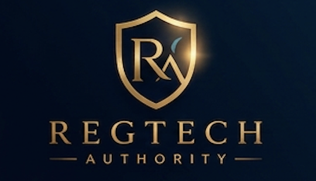

01 / VERIFICAÇÃO
Conheça quem está do outro lado.
Valide pessoas e empresas com KYC, KYB e informações de fontes oficiais.

Fale com um especialistaVerificação de identidade, análise de risco e monitoramento contínuo.
Uma visão integrada para decisões com mais confiança.
Valide pessoas e empresas com KYC, KYB e informações de fontes oficiais.
Conecte análise contábil, screening e monitoramento para identificar sinais de risco.
Reúna informações em dossiês estruturados, com rastreabilidade e trilha de auditoria.
Da validação inicial à investigação aprofundada, conecte informações e evidências em uma única plataforma.
Valide pessoas físicas por meio do cruzamento de informações em bases oficiais, apoiando o cadastro e o onboarding.
Analise dados empresariais e demonstrações de resultado para reconhecer inconsistências e sinais de irregularidade.
Relacione DRE, KYB, screening e histórico de risco em uma avaliação consolidada.
Acompanhe listas restritivas, pessoas expostas politicamente, sanções e processos judiciais.
Organize as informações em um dossiê estruturado para apoiar a análise e a tomada de decisão.
Consulte informações de fontes oficiais, incluindo Receita Federal, CNJ e registros de mandados.
Identifique endereços compartilhados por empresas e outros padrões que mereçam investigação.
Preserve a origem de cada informação e utilize assinatura digital para a validação dos dossiês.
Confira a acurácia das informações antes de utilizá-las na tomada de decisão.
Conte com acesso individual e trilha de auditoria para acompanhar as consultas realizadas.
Amplie a investigação com um módulo complementar de perícia web, além dos dados financeiros e cadastrais.
Consolide identidade, dados empresariais, informações contábeis e fontes oficiais.
Relacione indicadores financeiros, screening e risco geográfico para aprofundar a análise.
Acompanhe listas, processos e mudanças relevantes para ir além da verificação pontual.
Preserve fontes, reúna evidências e mantenha uma trilha de auditoria completa.
Converse conosco sobre verificação, análise de risco
e due diligence para sua operação.